Final Project: Multi-Game LED Display
Project Update
To begin my documentation, I am going to give a major update on my final project idea as I decided to change paths since the last time we spoke.
After carefully evaluating my initial project idea—a sensorized soccer ball—I concluded that it was not feasible due to significant challenges. Specifically, I faced difficulties getting through the inner material of a soccer ball and lacked a solution for securely mounting a circuit board that could withstand high-speed impacts.
Reflecting on the course, I realized I really had fun with electronics week, particularly working with Neopixels. I wanted to incorporate these arrays in my final project, leading me to pivot my project towards creating a multi-game LED display. This idea was inspired by several cool existing Arduino projects, including Flappy Bird on an LED matrix, Tetris on a Dot Matrix Display , and an Atari Breakout game on an 8x8 Matrix.
Integrated Prototype Mission: LED Tic Tac Toe Game Board
The first step in working towards a completed final project was to create a rough LED display board for initial code testing. This would help me understand the wiring process and how to work with both Neopixels and also a game joystick. I decided to start with Tic Tac Toe, as it is relatively simple to code and requires minimal hardware. Specifically, the game only needs a 5x5 grid of LEDs, making it an ideal starting point for my integrated prototype.
Integrated Prototype Development
LED Display Board
First, I began building a rough prototype of the LED display board. Since Tic Tac Toe only requires a 5x5 grid, I started by cutting five Neopixel strips, each containing five LEDs. I measured the dimensions of the strips and laser-cut a wooden base with scored lines to mark the strips’ placement. For this initial prototype, I taped the strips onto the base rather than using the permanent adhesive on their backs, allowing me to make adjustments if needed.


Once the LED strips were mounted, I began soldering them together. To ensure consistent power, ground, and signal flow through all of the strips on the board, I connected each strip using three wires: a red wire for power, a black wire for ground, and a blue wire for the data signal. I repeated this soldering process across all five strips, connecting them in sequence.
With the Neopixel array soldered and fully connected, I integrated it with an ESP32 microcontroller, following a standard pinout diagram to ensure the connections were correct.

To test the wiring and soldering, I ran a basic Neopixel test code shown below.
The test confirmed that all LEDs lit up and were functioning as expected, indicating that the soldering and wiring was successful.
Designing the Enclosure
To house the LED display, I designed a two-part 3D-printed enclosure on Fusion. The first model was a back panel to hold the LED board and accommodate the wires. The second part was a top cover with square openings aligned with each LED, allowing the light to project through. I carefully measured the spacing between each individual LED and between each strip to ensure precise alignment of the openings.
Using the Extrude tool, I also created recessed pockets in the back panel to manage wire routing and provide space for the soldered wire connections jutting out of the board. Once the design was complete, I printed the back panel, which took approximately 16 hours, and the top cover, which took about 5 hours.


Here you can access the .stl file for the back panel and the .stl file for the top cover.
Connecting the Joystick
After finalizing the design for the display casing, I moved on to integrating a joystick to control the LEDs. I chose the HW-504 joystick and followed this wiring diagram to connect it to my ESP32.

Coding the Tic Tac Toe Game
With the hardware assembled, I shifted my focus to coding the Tic Tac Toe game. I began by setting up the LED grid with static green LEDs to represent the game’s border. The green LEDs outlined columns two and four, as well as rows two and four, creating a 3x3 play area within the 5x5 grid.
After several hours of coding, the most challenging part was getting the joystick to accurately navigate the LEDs—moving smoothly from left to right and up and down on the grid. For simplicity, I replaced the traditional X’s and O’s with red LEDs for Player 1 and blue LEDs for Player 2. This meant I also had to figure out how to toggle the LED color: the first press of the joystick would turn the selected LED red, while the next press would switch it to blue. Below is the code that brought me this functionality:
This is what the display looked like when I ran that code:
Assembling the Display
Once the code started working, I focused on assembling the display by inserting the LED board into the 3D-printed enclosure. Initially, the LED board didn’t fit into the back container—it was off by about 1 mm. After about 20 minutes of sanding, I managed to fit the LED display snugly inside, with the wires fitting perfectly.
Here’s how the display looked once mounted in the backing:


I then added the top cover. Although I knew I’d need to reprint the cover with different screw placements and a new filament color, it was sufficient for testing.

Coding the Game Logic
The next critical task was programming the game logic. I began by listing all eight possible ways a player could win. I then integrated that logic into the code to check if the red or blue team had achieved a win condition. Afterward, I added a final touch: when the red team won, all LEDs briefly flashed red before resetting the game, and the same happened for blue.
Here is the final code for the tic tac toe game board:
Here’s the result of that code in action:
Addressing Cursor Navigation Challenges
One issue I encountered was the difficulty of accurately moving the joystick to the desired positions—directional movement was unclear. To solve this, I added directional arrows to the joystick, making navigation much easier!

Final Assembly
The last update I made was printing a new top cover with the correct filament color and the correct hole sizes and then screwing it securely onto the backing enclosure. This is what the final integrated prototype looked like unplugged:
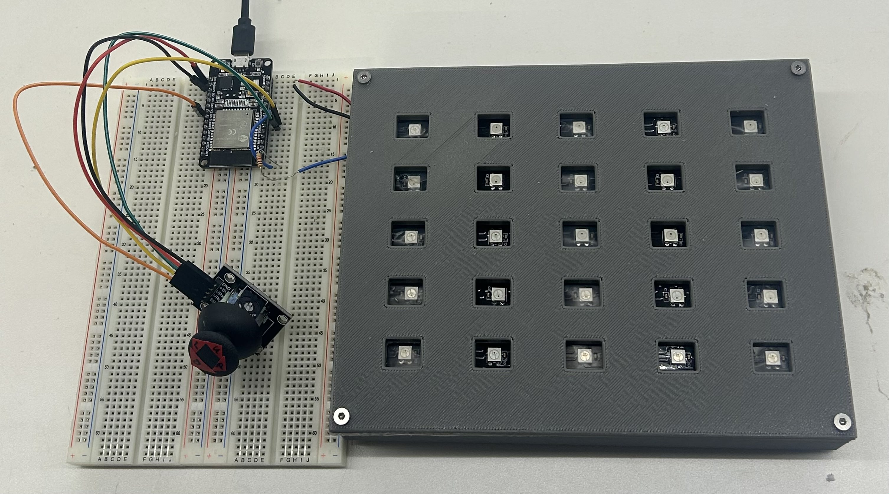Here is another video demo with the final iteration of the integrated prototype:
Next Steps
Moving forward, I plan to scale up the LED display by upgrading it to a 64x64 matrix and expanding its enclosure to accommodate the new design. Additionally, I will 3D print a resin cover to saturate the brightness of the lights so it is easier on the eyes. Once the display is fully assembled, I will develop code for additional games and design a mechanism to attach a joystick, transforming the setup into an interactive arcade-style game board.
Final Project Documentation
It was great to gain experience coding and learning how to control neopixel displays but then it became time for the real thing!
I wanted to create a much larger display and so I purchased a 64x32 RGB LED display from Adafruit that I could wire up.
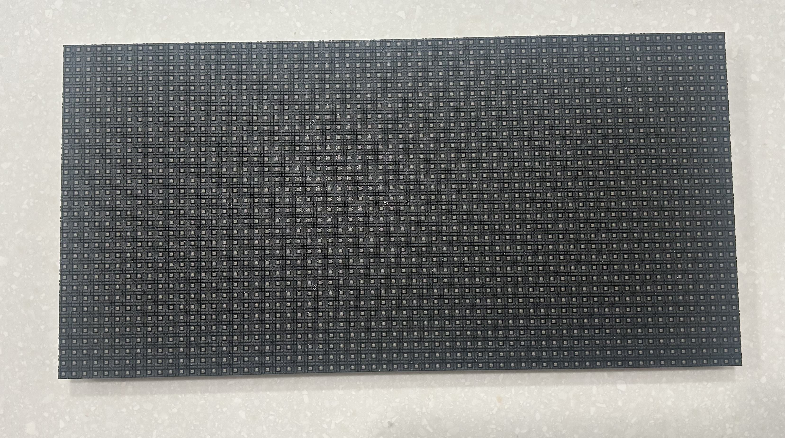Wiring the LED Matrix
Once the board came in, it was time to get to wiring on a breadboard! I followed this wiring schematic:
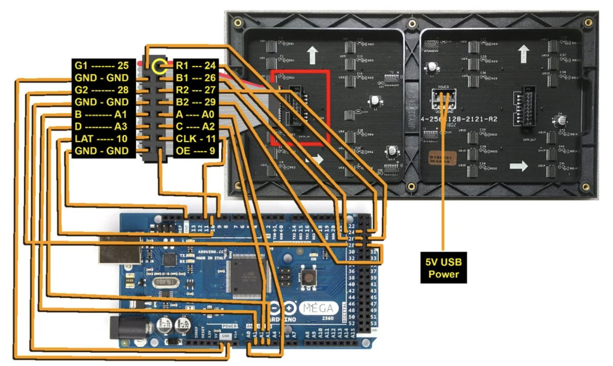However, I had to modify the pinouts for the digital pins a bit to accommodate the different Adafruit neopixel libraries, which I will explain in a second.
Here is what my initial wiring looked like:
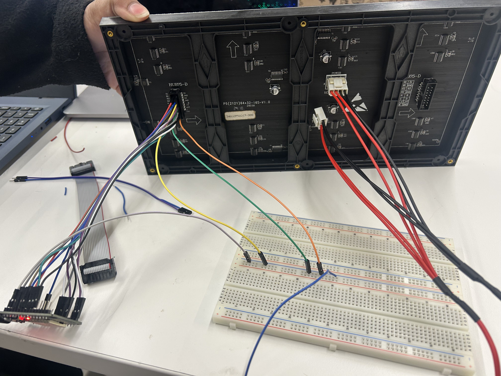Then it was time to find and upload code that worked for the display. This process proved deceptively time-consuming because I had to scour numerous libraries to land on one that worked for my pinout scheme.
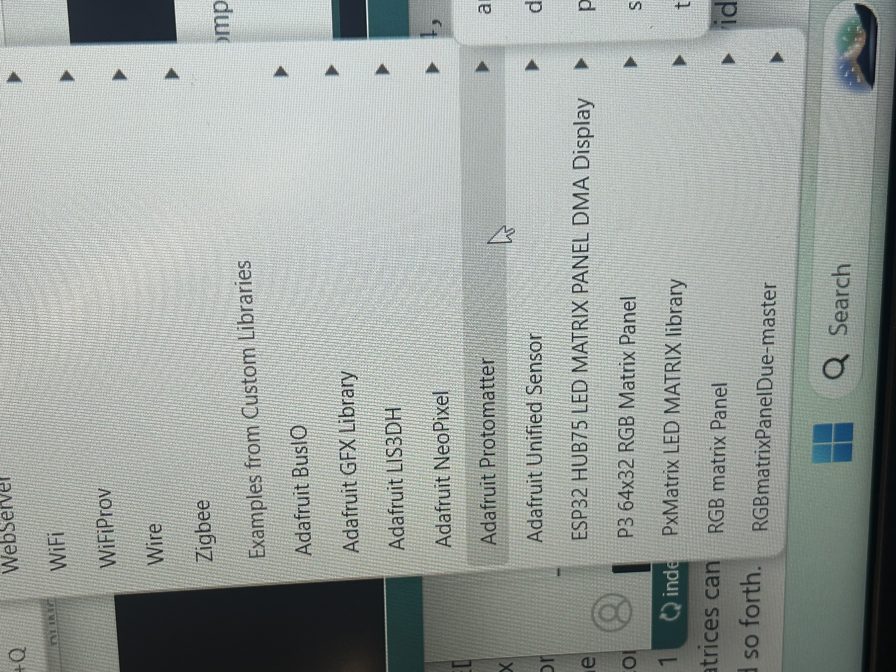It seemed that no library I stumbled upon was perfect. There was always some issue. For instance, I would upload example code from one library that would have no flickering or noise issues but the pixels would not be doing what the code was telling it to do. Other libraries in which the pixels were displaying correctly would have issues like flickering or unresolved noise manifesting in lit up pixels when no power was being delivered to the matrix. Here is an example of the flickering:
I was beginning to lose hope. But then I encountered the Adafruit Protomatter Library. After uploading example code from this library, the display worked perfectly! There was no background noise or flickering.
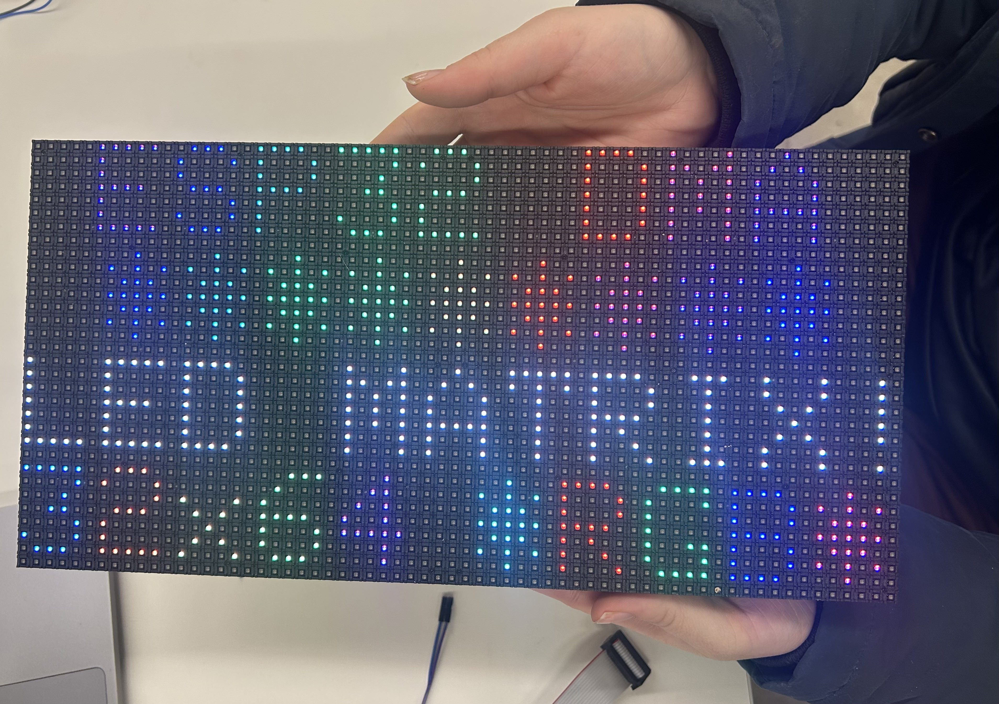Just to verify that this was not just luck from a single example code, I wrote simple code to just have the entire matrix turn green. When I did this, there was no flickering or noise, verifying that this library finally worked!
Next, I began integrating my LCD and joystick with the matrix. I wired them up using these pinout diagrams:
Here is what the circuit looked like:
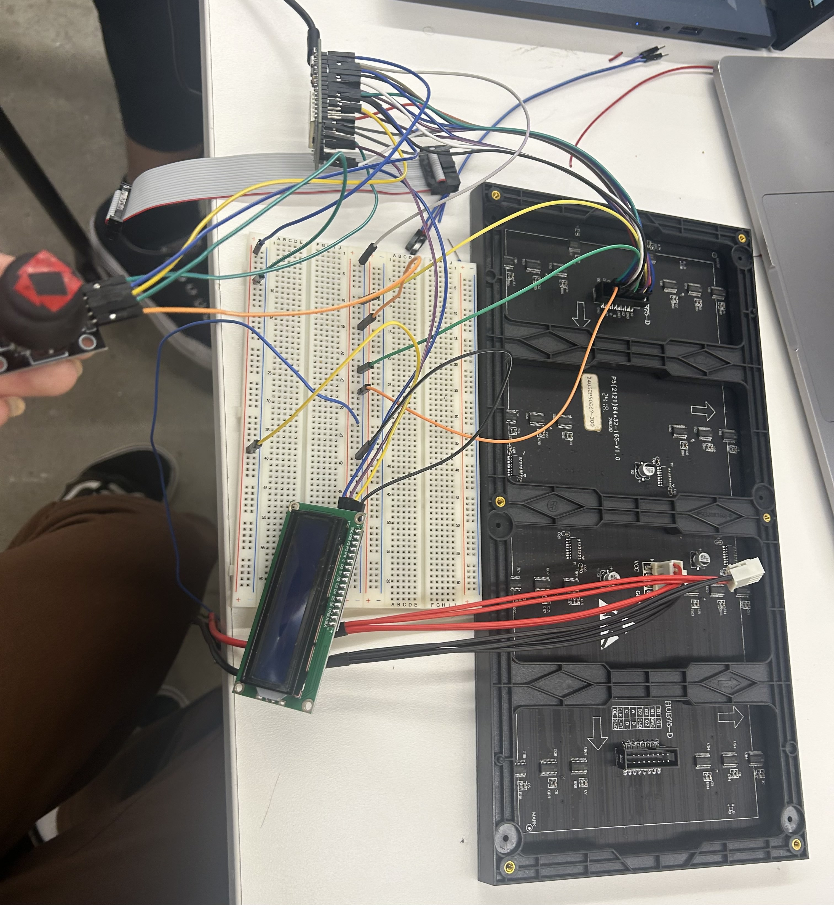I then added code for the LCD to check that it was working properly with the display and thankfully it was after I uploaded it. Here is the code I used:
Soldering
After verifying that the code and pinout schematic were all working together seamlessly, I then began the very daunting soldering process. I am a beginner at soldering and this was a large, complicated job for me because it required over 30 different connections, if you combine the matrix connections and the connections integrating the LCD display and the joystick.
Nevertheless, I got to work!
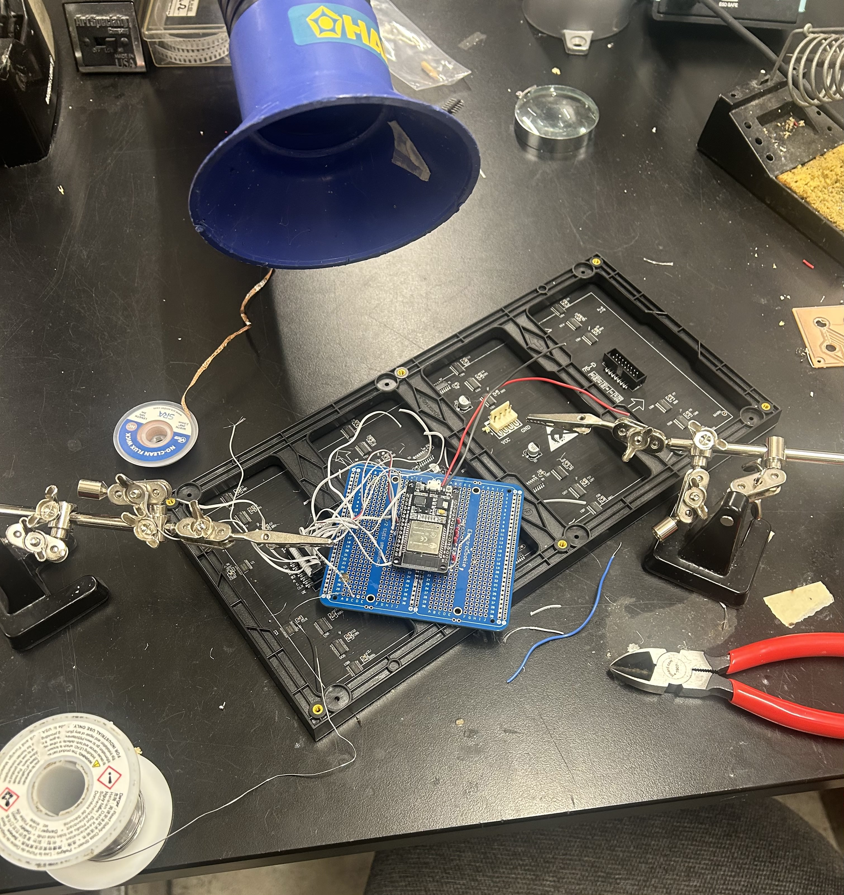I thought this would be a great way to improve my soldering skills and it was! But after some major mistakes were made first :)
I am sharing this as a cautionary tale. While soldering the connections on one side of my microcontroller, I was using the first pin as a reference point. Unfortunately, I realized after soldering around 16 connections that this first pin was actually empty and the second pin represented the first pin of the ESP32. This meant that all of my connections on that side of the microcontroller were off by one pin and so I had to, with Bobby’s much appreciated help, de-solder the whole board and start again.
This mistake ended up being a blessing in disguise! Originally, I stripped the physical wires from the matrix and was soldering them to the board. However, these wires were very thin and fragile and did not establish a great connection because the ends kept fraying. After I made the mistake, I switched over to soldering standard wires into the board that I would then connect to the matrix through the connector it comes with. This soldering process was much less difficult and time-consuming and I made swift progress with my matrix connections:
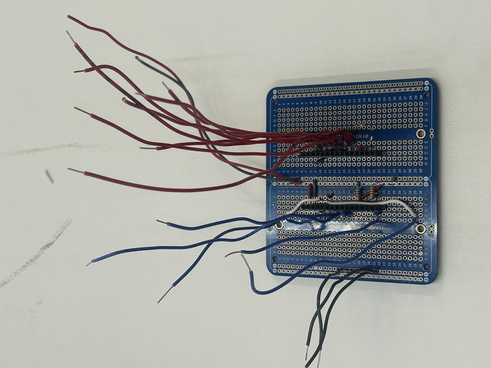Then I added the connections for the LCD (green) and the joystick (yellow). Almost complete! The last thing I had to do was figure out how to disseminate power to the board which I did through screw terminals. One screw terminal attached to the VCC power source on the back of the matrix which gives power to the board and the other screw terminal had wires that connected to the power adapter. This was required because the matrix demanded specific power requirements: 5V and 3.7 A. With that, the soldering job was complete!
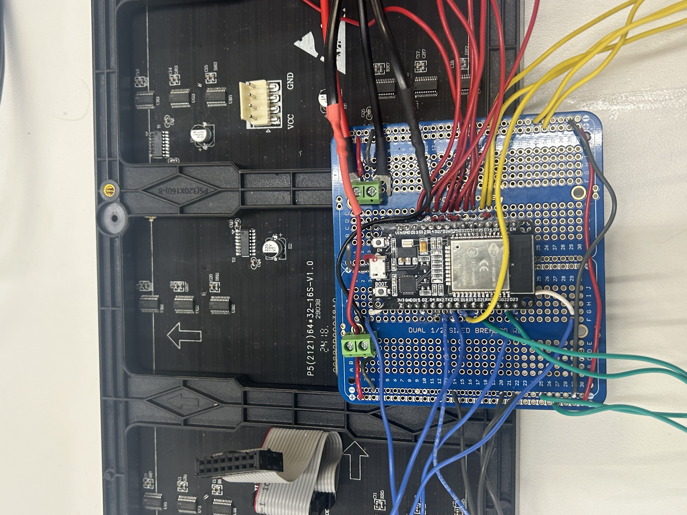Now it was time for the daunting task of connecting everything to the matrix and crossing my fingers that it worked! Before I did this, I used a multimeter to verify the connections were adding up and that everything was properly grounded. Something I realized I had to do was add another connection for the 3.3 V on the microcontroller as the joystick required this power supply instead of 5V to move effectively.
Here was what everything looked like connected to the board:
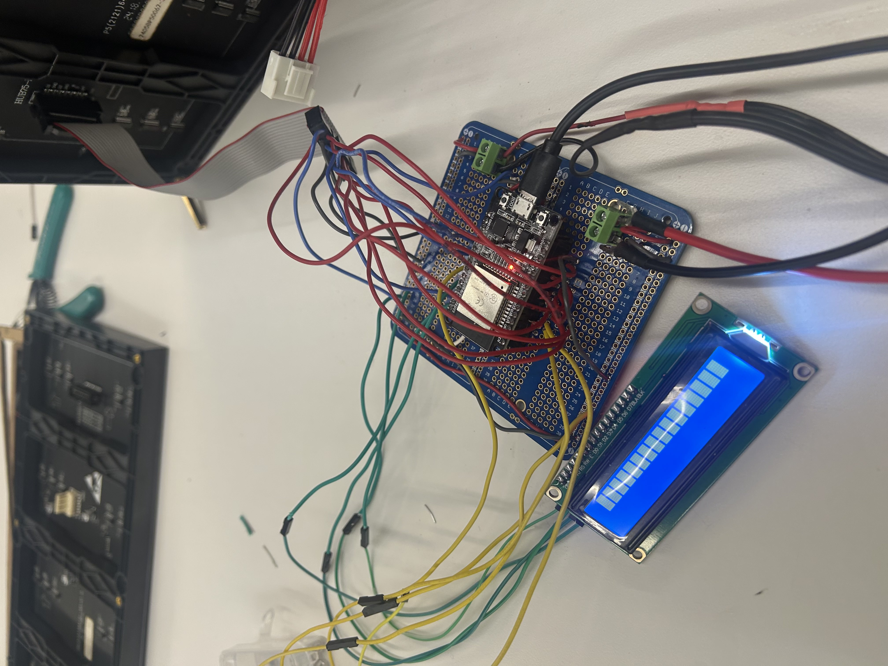Then I uploaded the previous code again. Luckily, it worked! The LCD turned on and the matrix and joystick could communicate with each other.
Constructing Pieces for Final Assembly
After the soldering was down, I then began the task of designing some pieces for assembling the final display. I knew that I did not want the wires that would be connected to the LCD and joystick to be visible. I decided I should route the wires underneath the wooden piece that would hold the joystick and the LCD. I first spent some time mapping out the dimensions so that the wiring would fit properly:
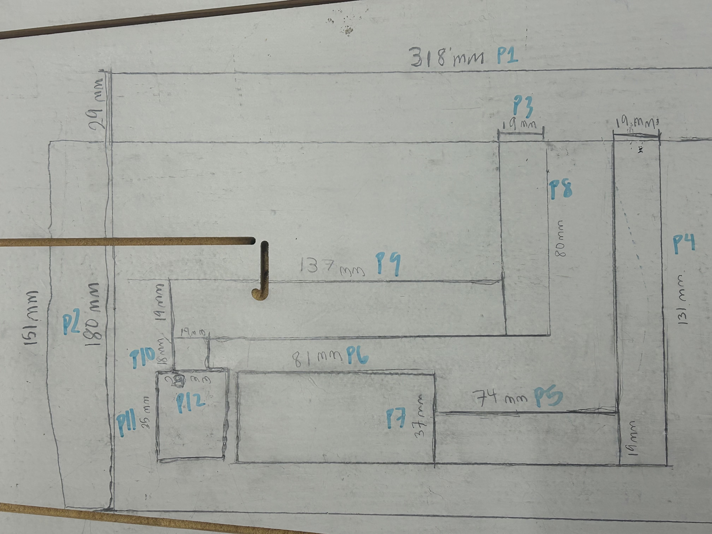This was the vision:
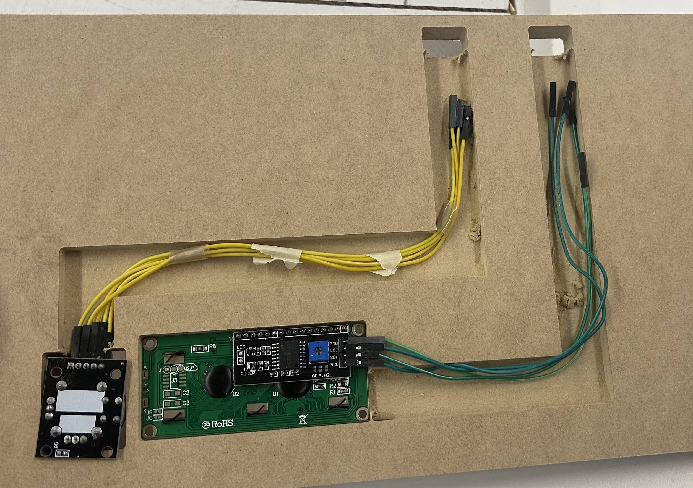I then took several trips to the CNC milling machine to get this right. The first time I milled it, I unknowingly did it the opposite way. I then tried to flip it but I only flipped it internally, leading the sizing to be off. But they do say the third time is the charm! After the third time at the mill, it finally came out how I wanted it to.
Programming the Games
Next came arguably the most time-consuming and challenging part of this entire project: coding the games!
I began by coding flappy bird because I thought it would be the more difficult game to code (spoiler alert: it was not.) I was pretty confident with writing the code to detect collisions and present the pixels in a visually aesthetic way that resembled flappy bird. However, the biggest challenge was in moving the green rectangles, representing the obstacles properly. After much trial and error, I devised a strategy in which I would define a set gap (e.g. 8 pixels) between a top and bottom rectangle. Each top and bottom rectangle would represent one instance. Then I would set constant widths of the rectangles and also constant spacing between them but I would randomly generate the heights which would vary the gap and difficulty of the game. After employing this method, the game worked!
I then added code so that the score would output on the LCD. I calculated the score by adding one each time a new rectangle generated.
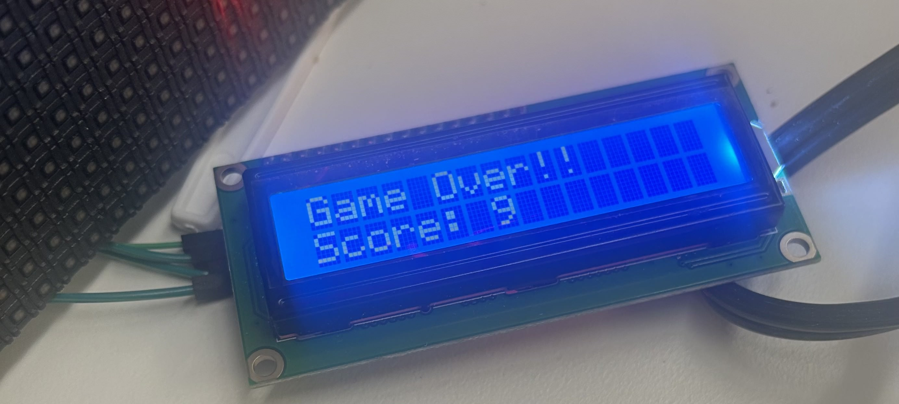Here you can see my finalized flappy bird game code:
Next, I began coding Tic Tac Toe. I thought that because I had already coded Tic Tac Toe for my integrated prototype, I could just adapt the code for the matrix but this was not the case. Coding this game proved incredibly challenging because Tic Tac Toe contains many game state switches and getting the joystick to move properly was also quite difficult.
For instance, at first, I was trying to get the joystick to move around individual pixels but this proved too challenging. I switched my approach to having the joystick navigate the individual squares in a 3x3 Tic Tac Toe grid.
When you pressed the joystick, it would output either a red X or green O for each player. I used similar code to the flappy bird code to integrate the switch function of the joystick but what proved difficult was toggling between these different outputs. Once that was figured out, however, I integrated the game logic into the code and then wrote code to output a red W, green W, or blue T as well as messages about who won the game on the LCD depending on the game outcome. This coding included a lot of clearing and refreshing the display but eventually I got it to work.
Here you can see my finalized Tic Tac Toe game code:
Now we are onto the hardest part of my coding!
I didn’t want to have to continue separately uploading the code to play either game at the fair and so I decided to code a menu that opens when the display is powered. When you click on either a grid reading “FB” or a grid reading “TTT,” you enter into either game and after each game is over you reset back to the menu screen.
This coding proved to be very difficult. To implement the menu, I created header files (.h files) containing the code for Flappy Bird and Tic Tac Toe. These files were then referenced in a main menu script, which acted as the central hub for the program. Ensuring that each game’s code was modular and self-contained required significant effort. This involved separating the logic, assets, and functions for Flappy Bird and Tic Tac Toe to avoid interdependencies that could lead to errors or conflicts when switching between the games. One of the most difficult aspects was managing function calls across the menu and the individual games. I needed to ensure that functions were not repeatedly called or incorrectly invoked. Transitioning between the menu and the games required careful state management. I had to create a robust system to track whether the program was in the menu, Flappy Bird, or Tic Tac Toe, and to reset the game state properly when returning to the menu after each game. Debugging errors when integrating two complex game systems into a unified menu was challenging. Simple mistakes, like inadvertently sharing variables or functions between the games, could cause cascading failures that were difficult to trace.
It was a great learning experience in the end and I did develop a successful code.
Here is the main menu script code:
Here is the flappy bird h file:
Here is the tic tac toe h file:
Final Assembly
Once the coding aspect of the project was finished, I began my assembly. I drilled holes and screwed the matrix into the bottom stage. I then routed the wires through their channels, and taped them down to the stage. I realized during the assembly process that my LCD was backwards using my wire routing channel. I did not have time to fix the design and so what I did to remedy this was to extend the wires for the LCD even more and then rotate it around to its correct positioning. Although this did not look as visually appealing, it was better than having the game results print backwards.
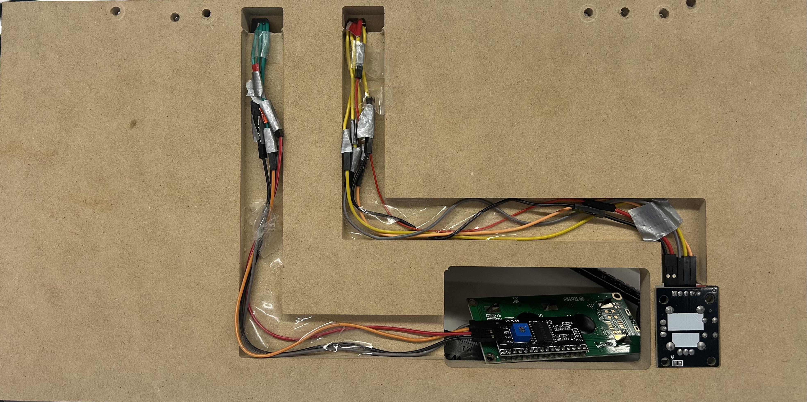To secure the wires into place, I also laser cut an acrylic backing that I attached to the bottom of the stage and screwed in place. This is what the design looked like:
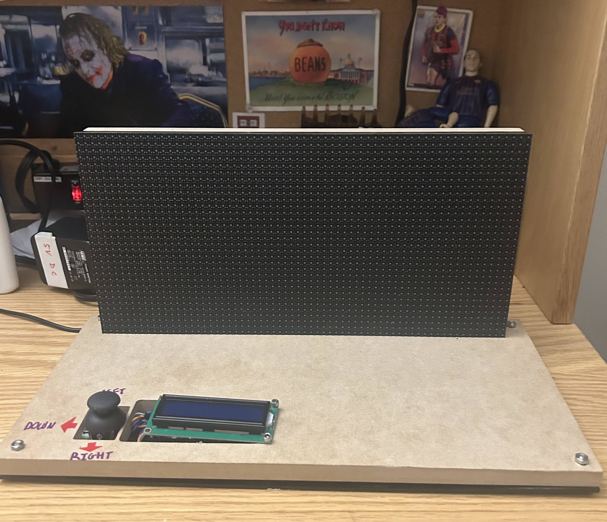I secured all of my soldering work and power supply elements to the back of the display with tape. The reason I am using tape is because I want a temporary securing method. I plan, in a future iteration of this project, to power the microcontroller wirelessly so I don’t have to keep plugging in my computer. This would require more soldering and so I didn’t want to screw down the board just yet!
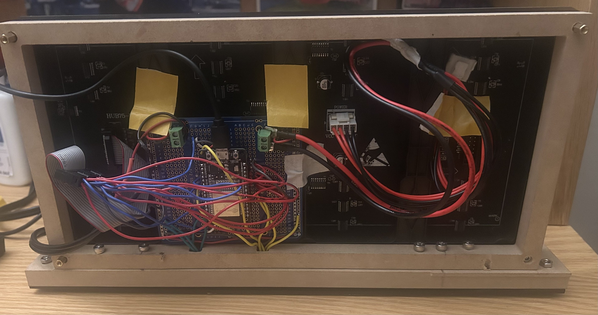I then milled out pieces of wood to create a stage around the display. Nonetheless, I realized this made it hard to see the display unless you were in the zone.
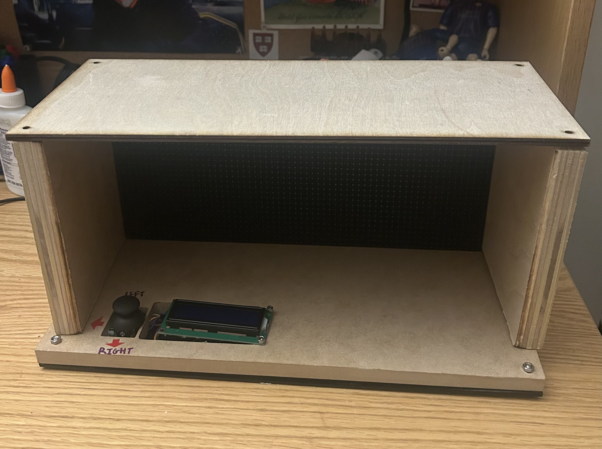I thought this would be counterproductive for the fair so I left it how it was originally.
This concludes my final project documentation and I will now show some video demonstrations of it in action.
Video Demo
During the fair, I was tasking everybody that came to my station to try to get the high score. This really motivated Pedro and Jack, the Messi and Ronaldo of flappy bird. They were locked in and vigorously competed for the title. Pedro held the title of the leading scorer with 134 for most of the fair.
But ultimately, in the last few minutes, Jack emerged victorious with the high score of 144, emerging as the Flappy Bird King!
Next Steps
Although I am taking a break for now, I am not done yet. I would love to add more games to this arcade game board like tetrus and pac-man!